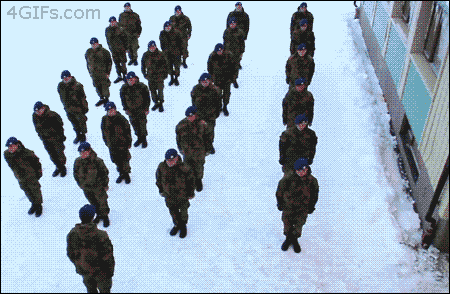
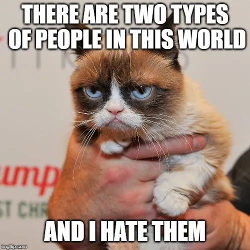

En los últimos años, los memes han evolucionado hacia el formato de video y GIF. Plataformas como YouTube, TikTok y Giphy han dado lugar a una nueva ola de memes virales, con clips cortos y animaciones que se comparten ampliamente en línea.
Este cambio ha llevado a la popularización de memes como "Harlem Shake", "Gangnam Style", y "Coffin Dance", que se difunden rápidamente a través de las redes sociales y generan millones de visualizaciones.
Con el tiempo, los memes han evolucionado para abordar temas específicos, como política, cultura pop, y eventos actuales. Los usuarios de internet crean memes para expresar opiniones, contar historias o simplemente hacer reír a otros usuarios.
Algunos ejemplos de memes temáticos incluyen "Trump Memes", "Game of Thrones Memes", y "Pandemic Memes", que reflejan la atención del público en diferentes momentos de la historia.
Con la expansión de internet a nivel mundial, los memes han trascendido las barreras culturales y lingüísticas para convertirse en un fenómeno global. Los memes pueden ser compartidos y entendidos por personas de diferentes países y culturas, lo que los convierte en una forma universal de comunicación.
Los memes como "Grumpy Cat", "Distracted Boyfriend", y "Salt Bae" han alcanzado la fama internacional y se han convertido en símbolos reconocibles en todo el mundo.
La evolución de los memes es un proceso continuo que sigue sorprendiendo a los usuarios de internet. Con el avance de la tecnología y la creatividad de los usuarios, es difícil predecir qué nos deparará el futuro de los memes.
Lo que es seguro es que los memes seguirán siendo una parte importante de la cultura en línea y continuarán influyendo en la forma en que nos comunicamos y compartimos ideas en el mundo digital.